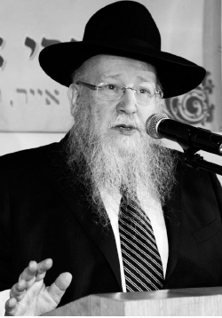

Brothers, Don’t Stop at the Last Minute!
The Rebbe Rayatz asks us for mesirus nefesh. Not earth-shattering mesirus nefesh, but the type of mesirus nefesh which entails forgoing our desires in order to do Hashem’s will. Pursuing this entails effort similar to or even more than the ultimate in mesirus nefesh as we know it. * From a speech delivered by Rabbi Shmuel Butman at the Yud Shvat farbrengen in 770 in 5772.

On 28 Sivan 5701, the Rebbe Rayatz sent a letter to Oscar’s father, R’ Dovid Meir, to tell him that his son-in-law and his wife had arrived safely on American shores. The letter is very short but famous. The Rebbe announces that boruch Hashem, his son-in-law and daughter arrived that day and the Rebbe thanks his son Oscar for his part in saving them.
When R’ Dovid Meir lived in Boston, there was a woman who lost a teenaged daughter. After her daughter died, the mother heard the sounds of crying in the house. She did not know whether she was hearing her deceased daughter or whether the sounds were a figment of her imagination.
She went to consult with R’ Rabinowitz who wrote to the Rebbe Rayatz about it and asked for advice and a bracha for the woman.
The Rebbe wrote back that the sounds of crying were not her imagination; they were real cries. It was her daughter from the next world, the world of truth, who was crying. She was crying because her mother donated money to Jewish institutions that fought against Judaism. That is why she cried.
Therefore, wrote the Rebbe, she should choose two rabbanim to join you as a beis din. Ask the mother to compile a list of all the institutions she supports, find out which institutions are worthy and which she should stop supporting. Then go to her daughter’s grave and tell the daughter what you did and she will stop crying.
And so it was.
WE NEED THE REBBE
We are marking the day of hiskashrus to the Rebbe, 11 Shvat, the first day of the Rebbe’s nesius. The first day of the Rebbe’s nesius is not necessarily 11 Shvat 5711 but 11 Shvat 5710. This is the most appropriate time for hiskashrus.
I saw a vort, not a Lubavitcher vort, but one that is appropriate to the parsha that we began reading at Mincha. It says, “And Yisro heard.” Rashi asks, “What news did he hear that made him come? The splitting of the sea and the war with Amalek.” Why does Rashi have to ask what news he heard when the pasuk says explicitly, “what Elokim did for Moshe and Yisroel His nation that Hashem took Yisroel out of Egypt”? Why does Rashi give two reasons when the Torah itself only speaks about the exodus from Egypt?
The Chassidic answer is: What did Yisro hear that caused him to go? The splitting of the sea and the war with Amalek. In this world, there can be the greatest miracles like the splitting of the sea, but still, after all the big miracles, it is still possible for a war with Amalek. “Then the chieftains of Edom were frightened” – the entire world was astounded by the miracles of the splitting of the sea. After miracles like that, we could have assumed that it would be quiet, that everyone would be afraid to start up with this exalted nation.
But when Yisro saw that there can be a splitting of the sea followed immediately by Amalek waging war, he realized that it would be hard for him to manage alone. Yisro realized that he needed a “Rebbe.” This is the reason he went to Moshe Rabbeinu.
This is the essence of 11 Shvat – it is impossible for us, in this generation, at this time, to manage alone. We need the Rebbe to help us and the Rebbe did indeed help us until now and will continue to help us.
THE SACRIFICE REQUIRED IN SENDING OUT SHLUCHIM
Yud Shvat is the Yom Hilula of the Rebbe Rayatz. If we can define the Rebbe Rayatz, it might be as “the Rebbe of Mesirus Nefesh.” On the many occasions that the Rebbe spoke about his father-in-law, he said that he had mesirus nefesh that was incomparable to the mesirus nefesh of his predecessors. Although we know the story of the Alter Rebbe, that he too was imprisoned, he still wasn’t sentenced to death, heaven forbid. It is possible that those who arrested him sought that outcome and they even brought him in the black carriage, but the government never sentenced him to death.
The Rebbe Rayatz was sentenced to death. In all of Chabad history, there was never a period as difficult as that of the generation of the Rebbe Rayatz. He was the Rebbe of mesirus nefesh.
However, mesirus nefesh itself wasn’t the hardest thing for the Rebbe Rayatz. There is something harder than mesirus nefesh. What is that? Sending someone else on a mission like that. The Rebbe not only acted with mesirus nefesh himself, but he also sent his Chassidim on missions that demanded mesirus nefesh. When the Rebbe sent them, he knew that there was a good chance they would never return (the Rebbe once spoke about this at a farbrengen).
One of my mashpiim, R’ Eliyahu Moshe Liss, told the following story. The Chassid, R’ Chatshe (Yechezkel) Feigin, was the Rebbe Rayatz’s gabbai. He once stood behind the door of the Rebbe’s room and as he stood there, he heard a loud bang. When he opened the door, he saw the Rebbe lying on the floor and laughing. The Rebbe was in great pain after breaking his arm. One can only imagine how much pain he was in from the fall and the fracture and yet, he laughed.
R’ Chatshe said that he did not dare to ask the Rebbe why he was laughing at that time. He called for help and the Rebbe was taken to the hospital where his arm was treated.
A long time later, R’ Chatshe found an opportunity to ask the Rebbe why he had laughed when he was suffering greatly. The Rebbe replied: When I woke up that morning, I felt that something terrible would happen that day. I laughed because I was pleased that it transpired with my body. In other words, the Rebbe was afraid that something unpleasant would happen to someone that day. When it happened to him and not to someone else, it was cause for the Rebbe to laugh and rejoice.
If the Rebbe was happy that he was the one who was injured and suffering and not someone else, we can only imagine how agonizing it must have been for the Rebbe to send a chassid to be a shochet or a melamed, when the Rebbe knew that the Chassid might pay for this with his life or be sent to Siberia and never see his family again.
The Chassid, as opposed to the Rebbe, did not know what the Rebbe knew. He knew that he was going on the Rebbe’s shlichus and was hopeful that he would return to his family in peace. But the Rebbe knew his fate and he sent him. That takes much more mesirus nefesh than to give up one’s own life.
A Jew once asked me: What does the Rebbe Rayatz want of us today? Does he want mesirus nefesh? There is no need for that nowadays. It used to take mesirus nefesh not to send one’s children to public school in Russia. If the child wasn’t sent to the communist school, the father was arrested or worse. Keeping Shabbos required mesirus nefesh. Having a beard required mesirus nefesh. Building a sukka required mesirus nefesh. Today, boruch Hashem, mesirus nefesh is not required to grow a beard, to build a sukka, or to provide children with a proper Jewish chinuch. You can send them to yeshiva and nobody will interfere.
So what does the Rebbe Rayatz demand of us today? In the maamer, “Ein Omdim L’Hispalel,” the Rebbe Rayatz writes in a few lines that mesirus nefesh means giving up one’s ratzon (will). The prophet Yirmiyahu suffered terribly from the Jewish people and Hashem says to him, “My nefesh is not with this nation.” Rashi says “nefesh” here means “ratzon.” The Rebbe Rayatz is telling us: mesirus nefesh is mesirus ha’ratzon. It’s not about sacrificing your life; it’s about sacrificing your desires. If you want to do something for your pleasure, forgo it, don’t do it.
This is true mesirus nefesh and it can be as hard as physical mesirus nefesh. The Rebbe writes in a maamer that in Russia the Jews had mesirus nefesh. When these mesirus nefesh Jews came to America, they became Americanized, Yankees. They drank Coca Cola like everyone else and became ordinary people. Their mesirus nefesh vanished.
When mesirus nefesh was required of them in Russia, they rose to the occasion, but when it was no longer necessary, when they no longer had to risk their lives, they became unremarkable individuals.
The Rebbe Rayatz demands mesirus nefesh of us when we are living normal lives. Not the earth-shattering type of mesirus nefesh but the everyday sort: getting up on time (or earlier), saying Modeh Ani, going to the mikva and so on, throughout the hours of the day. This is mesirus ha’ratzon, forgoing my wants in order to do what Hashem wants me to do. Doing this continuously requires effort just like, or even more than, the classical sense of the term, mesirus nefesh.
DON’T MAKE DO WITH LESS
It is 11 Shvat, marking the first day of the Rebbe’s nesius. In the first maamer, in 5711, the Rebbe lets us know what he expects of us. He calls us the “seventh generation” (in later years he called us the “eighth generation” and the “ninth generation”) and he said we are the seventh generation not because we tried to be. It is not our choice. We could have been in the fifth or sixth generation or not born at all, but this is Hashem’s desire, that we be born in this generation, the seventh.
The seventh is the seventh from the first, from Avrohom Avinu. It is highly recommended that you learn the maamer in depth, because the Rebbe says what he demands of the seventh generation. He wants us to take a lesson from Avrohom Avinu. Avrohom went out to the world as the first Jew, one against the world. He did not have access to the means of communication we have today. Nevertheless, the Rambam tells us, he was mekarev thousands and tens of thousands of people. He was a man alone, without a microphone, radio or Internet, and he was mekarev thousands with mesirus nefesh. He did not seek to be moser nefesh. The Rebbe then explains to us the difference between Avrohom’s mesirus nefesh and that of Rabbi Akiva who sought to give up his life.
Avrohom did not seek to give up his life. He wanted to get people to call in the name of Hashem. Not only did he proclaim the name of Hashem, which required mesirus nefesh since the government did not allow it, he also wanted other people to call in the name of Hashem.
The Rebbe explains that there are two types of Jews. There is the Jew who is satisfied by taking care of himself, his wife and children. He makes sure they are on the right path and are mekusharim to the Rebbe. As for the rest of the world, he becomes very modest and wonders how “little him” can take on the world!
The Rebbe says, just working on his own calling out will not penetrate him. That means he will not find peace and won’t be happy until he gets other people involved too.
This is a very critical message for every one of us. Even if a Chassid has everything his heart desires in this world, if he only takes care of himself and those close to him, he will never achieve true inner peace. His soul will be hungry and he will always feel lacking.
The Rebbe goes on to present the counter-argument, speaking for this Jew whose neighbor does not know anything: so therefore I have to take him and teach him Alef-beis. It’s not easy to teach someone Alef-beis when I consider myself a scholar.
Says the Rebbe: We have a mission and our mission is to bring Moshiach.
In that maamer, the Rebbe says that when you go somewhere, you do as they do. In America there is a custom for the newly elected president to deliver an inaugural address in which he lays out his plans and goals for his presidency. The Rebbe says that he will follow this practice and announce his plans and goals for his nesius. The Rebbe’s “statement” was very brief. He said he was going to bring Moshiach here, in this physical world.
AS LONG AS YOU DIDN’T REACH THE FINISH LINE, YOU DIDN’T MAKE IT
Many laud the Rebbe for never having gone on vacation, especially when g’dolei Yisroel went on vacation and even the Chabad Rebbeim did so, of course for their health etc. But our Rebbe never did such a thing. The (possible) reason for this is, the Rebbe has one task, one goal, to bring Moshiach.
The Rebbe is the only one in the world to have achieved a global dissemination of Judaism. There are shluchim everywhere and the Rebbe’s success is unprecedented. Hashem never had someone do His work as the Rebbe did! In the history of the world, he is the only one to have accomplished Hashem’s ratzon on this scale.
But our goal is not that there should be Chabad houses all over the world; out goal is to bring Moshiach! As long as we don’t have Moshiach, we have not completed our mission. We cannot talk about taking a vacation as long as we are in middle of the job.
Picture someone in the middle of a project. He suddenly calls his boss and tells him he’s sorry but he needs to go on vacation. Vacation?! When you’re in the middle of a project? There is a deadline, you have work to complete. How can you go on vacation now? When you finish the job you can go on vacation.
We cannot stop in the middle! As long as we haven’t reached the finish line, we have not yet arrived. To attain 90% or even 99% is not good enough. We need all 100%. So who can take a break?
Rabbi Pinchas Hirschsprung z”l of Montreal would say of the Rebbe that the Lubavitcher Rebbe does not sleep and does not allow others to sleep. He’s right. And why doesn’t the Rebbe let us sleep? Because we are in the middle of the project and haven’t finished it yet. In order to finish it, we must all get busy. Let us learn Alef-beis with one and Chumash with another and Hemshech Ayin-Beis with a third. It’s all possible. The main thing is to reach every Jew, because we have to reach everyone and achieve the complete Geula. It is the Rebbe’s goal. If he said this is what he is setting out to do, obviously, he will accomplish it. In his kindness, he enables us to join him in this mission.
As the Rebbe concludes the maamer, “and he will redeem us,” which has one meaning: the Rebbe in a physical body will take us out of galus, and he will redeem us, immediately.
Beis Moshiach (staff). "Brothers, Don’t Stop at the Last Minute!." Beis Moshiach, no. 910 (January 7, 2014).